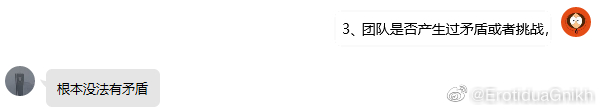

晚安1.做采访。发现根本没啥好说的，真的太随意了…感觉一件“怎么爽怎么来”的事情非要整理心得是一件相当痛苦的事情。2.龙哥离开了宿舍。我们宿舍走人的顺序刚好是当年入住顺序的倒序，唏嘘。3.写书可以提上日程了，选题过了，目录也没问题。编辑发了个“我们要走erp流程”，我吓了一跳——原来erp真的有人用啊，我错怪你了信管，我昨天还锐评了一句“我们专业既不信息，也不管理，更不系统”，我自裁。3.5[招聘广告]现在只会写emo小作文不会写书面语，能不能招个助手，做得好稿费都给你